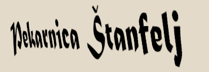

"Fresh bread every day, that's our way"

NAŠA LOKACIJA:
Hrvatska, Primorsko-Goranska županija, 51304 Gerovo, Partizanska 2
KAKO DO NAS?
Ukratko, slijedite upute koje vam daju google karte. Nalazimo se blizu centra naselja i nije nas teško uočiti. Kada ste prošli centar naselja, slijedite ulicu u kojoj se nalaze lokalni kafići i Konzum, te ćete ubrzo i uočiti našu pekaru. Na dvorištu se obično nalaze poslovni automobili za uslugu dostave , time ćete biti sigurni da ste na pravom mjestu.